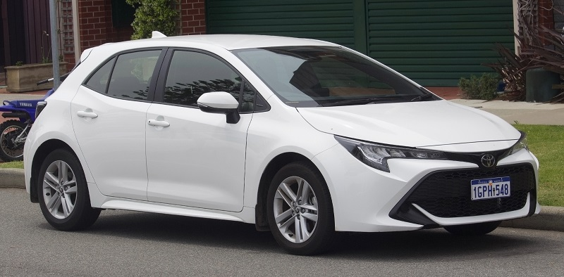

Honnan számít önvezetőnek egy autó?
Akit kicsit is érdekel a jövő mobilitása, már valószínűleg hallott az autonóm járművek szintjeiről. Röviden és tömören, az Autóipari Mérnökök Társasága (SAE) által 2014-ben meghatározott irányvonalakról beszélhetünk, melyek segítenek különbséget tenni az önvezetés eltérő fejlettségű fokai között. A definiált szintek alapvetően azt mutatják meg, hogy a dinamikus vezetési műveletek hogyan oszlanak meg az ember és a gép között a 0. szinttől az 5. szintig.
Tankörtársaimmal ezeket a szinteket igyekeztünk részletesen bemutatni, illetve egyes vezető segítő funkciókat saját készítésű felvételeken keresztül szemléltetni. Az általunk készített videó ezen a linken érhető el
0.szint- Nincs automatizáltság
Ide tartoznak azok a régebbi járművek, melyekben semmilyen vezetéstámogató rendszer sem található. A jármű irányítása kizárólag az emberi vezető kezében van, annak teljes irányítása alatt áll. A sofőr folyton kormányoz, sebességet szabályoz, mindenre figyel a járművön belül és kívül.
1.szint- Gépjárművezetés támogatás
Az önvezető autók fejlődésében az egyes szintet a gépjárműknek a támogatása, a részleges automatizáltság jelenti, mely tulajdonképpen azt foglalja magába, hogy a jármű képes átvenni az irányítást, különböző a sebességváltoztatáshoz vagy éppen kormányzáshoz kapcsolódó műveletek felett. Tipikusan a tempomatra, adaptív tempomatra, sávelhagyás figyelőre, sávtartóra kell itt gondolni.
2.szint- Részleges automatizáltság
A számítógépek több feladatot vesznek át a sofőrtől, és eléggé intelligensek ahhoz, hogy összetett adatforrások használatával összefogják a sebességtartó és a kormányozási rendszereket. Ezek a rendszerek a megterhelés egy részét leveszik az ember válláról, de továbbra is megkövetelik, hogy az adott személy mindig figyelmes legyen.
3.szint- Feltételes automatizáltság
Ezen a szinten a jármű már képes fejlett technológiájának köszönhetően a képes dinamikus vezetési műveleteket önállóan végezni. Hogyan? A kulcs a navigáció, a radarok és érzékelők finomítása, és ezek környezetről készített adatainak vegyítése az egyre okosabb és gyorsabb processzorok és logika segítségével.Azonban a rendszer azt feltételezi, hogy szükség esetén a jármű vezetője képes átvenni az irányítást az autó felett.
4.szint- Magas automatizáltság
Járművek, amelyek legtöbbször maguk vezethetnek, de bizonyos helyzetekben szükség lehet egy emberi sofőrre, hogy átvegye az irányítást. Főleg zárt helyeken, autópályákon képesek közlekedni a HD térképészetnek és az autók közötti kommunikációnak köszönhetően. Négyes szinthez tartoznak az olyan robottaxik, mint a SEDRIC¹, amelyek korlátozott közlekedési viszonyok között, például városban teljesen automatizáltan közlekednek. Nincs szükség járművezetőre és az utasok más feladatokkal foglalkozhatnak vagy akár alhatnak.
5.szint- Teljes automatizáltság

Az ötös szint abban tér el a négyestől, hogy itt már nem csak bizonyos helyeken képes önállóan haladni a jármű. Az autó teljesen autonóm, bárhol, bármikor, bármilyen körülmények között képes önállóan mozogni. Felismeri a környezetet, a sávjelzéseket, kommunikál a többi járművel, melyek lehetővé teszik, hogy emberi beavatkozás nélkül eljusson a kijelölt célig.